Season 41 (2006-2007)
-
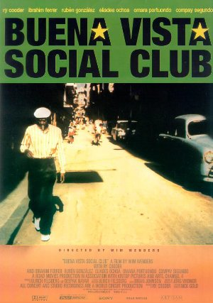
September 10, 2006Directed by Wim Wenders; Starring Compay Segundo, Eliades Ochoa, Ry Cooder, Joachim Cooder
Buena Vista Social Club

Germany/USA/UK/France/Cuba, 1999, 105 min, Color, G, Spanish w/subtitles
In 1996, American guitarist Ry Cooder gathered together some of the greatest names from the history of Cuban music to collaborate on the best-selling Grammy-winning album "Buena Vista Social Club". This ground-breaking documentary, inspired by the album, includes appearances by many renowned Cuban musicians. Documentary filmmaker Wim Wenders traveled to Havana to chronicle the cooperation and camaraderie between the musicians, as well as their dazzling sell-out concerts in Amsterdam and New York's Carnegie Hall in 1998. The rediscovery of these musicians came late in life for many of them; some of them were in their nineties when the film was made.
-
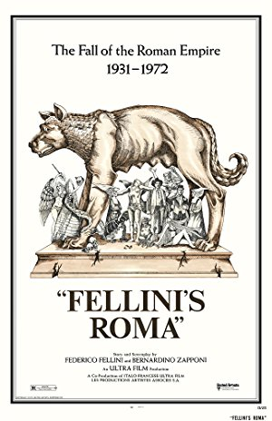
October 8, 2006Directed by Federico Fellini; Starring Peter Gonzales Falcon, Fiona Florence, Britta Barnes, Pia De Doses
Roma
Italy, 1972, 120 min, Color, R, Italian w/subtitles
"A story of a city" to quote Federico Fellini. Fellini strings together a series of images of Rome, and it is through his eyes that this special city becomes a living, breathing organism. It is Fellini's personal encounter with Rome. It is not a documentary, although it feels like one at times and contains autobiographical themes from Fellini's life.
-
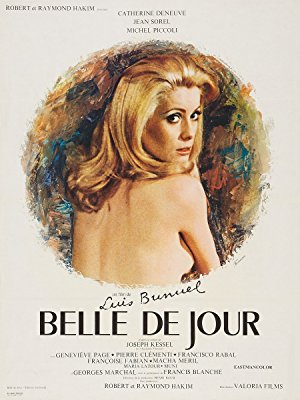
November 12, 2006Directed by Luis Buñuel; Starring Catherine Deneuve, Jean Sorel, Michel Piccoli, Geneviève Page
Belle de Jour
France/Italy, 1967, 100 min, Color, R, French w/subtitles
Séverine (Catherine Deneuve) is a beautiful young woman married to a doctor. She loves her husband dearly, but cannot bring herself to be physically intimate with him. She indulges instead in vivid, erotic fantasies to entertain her sexual desires. Roger Ebert said of Belle de Jour "It is possibly the best-known erotic film of modern times, perhaps the best." That is because it understands eroticism from the inside-out – understands how it exists not in sweat and skin, but in the imagination.
Read Roger Ebert's review of Belle de Jour at Great Movies. -
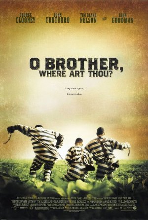
December 10, 2006Directed by Joel Coen, Ethan Coen; Starring George Clooney, John Turturro, Tim Blake Nelson, John Goodman
O Brother, Where Art Thou?
UK/France/USA, 2000, 107 min, Color, PG-13
In the Depression-era deep South, we meet three escapees from a Mississippi prison chain gang: Everett Ulysses McGill (George Clooney), sweet and simple Delmar (Tim Blake Nelson), and the perpetually angry Pete (John Turturro). Still in shackles, they make a hasty run for their lives and end up on an incredible journey filled with challenging experiences and colorful characters in this modern-day spin on Homer's The Odyssey. The Coen brothers teamed with music producer T-Bone Burnett to put together a stellar soundtrack of traditional American songs that is as much a star of the movie as the excellent cast.
-
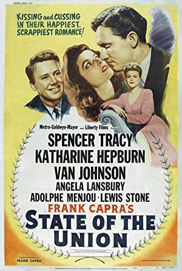
January 14, 2007Directed by Frank Capra; Starring Spencer Tracy, Katharine Hepburn, Van Johnson, Angela Lansbury
State of the Union
USA, 1948, 124 min, B&W, Not Rated
Based on the Pulitzer Prize-winning play, State of the Union examines the impact of hard political reality on idealistic industrialist Grant Matthews (Spencer Tracy), who is drafted to run for the presidency. As a candidate, he is caught between the ruthless ambition of newspaper Kay Thorndyke (Angela Lansbury), who pulls the strings of his campaign, and the integrity of his wife (Katherine Hepburn), who believes in the man behind the political facade. Capra presents a memorable menagerie of handshaking, backstabbing party professionals who turn the election into an elaborate political sideshow.
-
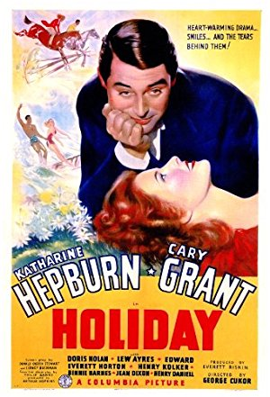
February 11, 2007Directed by George Cukor; Starring Katharine Hepburn, Cary Grant, Doris Nolan, Lew Ayres
Holiday
USA, 1938, 95 min, B&W, Not Rated
Free-thinking Johnny Case (Cary Grant) finds himself betrothed to a millionaire's daughter. When her family wants Johnny to settle down to big business, he rebels, wishing instead to spend the early years of his life on "holiday". With the help of his friends, he makes up his mind as to which is the better course, and the better mate. Film critic Nick Davis said Holiday is "spellbinding without being a mystery, ravishing without being ornate, heart achy despite being a lovely comedy, and full of surprise gestures and unexpected flights of feeling."
-
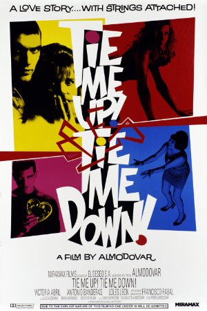
March 11, 2007Directed by Pedro Almodóvar; Starring Victoria Abril, Antonio Banderas, Loles León, Julieta Serrano
Tie Me Up! Tie Me Down! (Átame!)
Spain, 1989, 101 min, Color, NC-17, Spanish w/subtitles
A disturbed young man named Ricky (Antonio Banderas) decides to give an actress the opportunity to know him fully and to love him. Her name is Marina (Victoria Abril), and she is a bad actress with a background in pornography, but to Ricky she is a perfect angel, and that is why he kidnaps her and ties her to the bed while he attempts to convince her to love him. The film is presented as a dark comedy and a love story rather than horror, which gives it an unusual emotional hook.
-
 April 8, 2007Directed by Bernardo Bertolucci; Starring Ugo Tognazzi, Anouk Aimée, Laura Morante, Victor Cavallo
April 8, 2007Directed by Bernardo Bertolucci; Starring Ugo Tognazzi, Anouk Aimée, Laura Morante, Victor Cavallo
The Tragedy of a Ridiculous Man
Italy, 1981, 116 min, Color, PG, Italian w/subtitles
Bertolucci's comic character study focuses on "ridiculous man" Primo Spaggieri (Ugo Tognazzi), the amiably grizzled owner of a cheese factory in Parma. When his son, Giovanni, is kidnapped, Primo realizes that he will have to sell his business to pay the ransom. The idea of throwing away his life's work gives him pause, however. Primo finds out much about his wife, son, and workers that he did not expect as the plot takes surprising twists. Primo's only real crime is his dubiousness toward the many voices who ask him to give his soul to their causes.
-
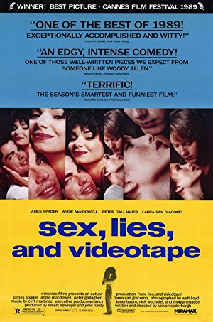
May 13, 2007Directed by Steven Soderbergh; Starring James Spader, Andie MacDowell, Peter Gallagher, Laura San Giacomo
Sex, Lies, and Videotape
USA, 1989, 100 min, Color, R
This revolutionary Sundance and Cannes film Festival winner revolves around something as old-fashioned as the romantic triangle. However, the handling by writer/director Steven Soderbergh brings a fresh, new dimension to a frequently covered subject. Roger Ebert said of the writing that "it is never boring, and there are moments when it reminds us of how sexy the movies used to be, back in the days when speech was an erogenous zone." Sex, Lies and Videotape is often credited with launching the rise of the independent film industry.
-
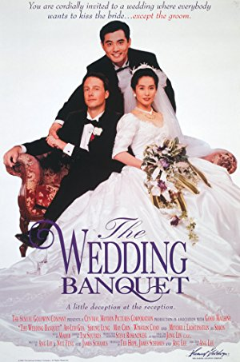
June 10, 2007Directed by Ang Lee; Starring Ah-Lei Gua, Sihung Lung, May Chin, Winston Chao
The Wedding Banquet
Taiwan/USA, 1993, 106 min, Color, R, Mandarin w/subtitles and English
A gay Taiwanese-American man is in a happy long-term relationship in Manhattan, but his parents in Taiwan are always pressuring him to marry. His tenant, a young Chinese girl, needs to marry an American citizen to obtain her green card, so a deal is made. Complications arise when the joyous parents arrive for the wedding and a huge cross-cultural banquet is arranged to celebrate.
-
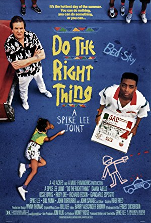
July 8, 2007Directed by Spike Lee; Starring Danny Aiello, Ossie Davis, Ruby Dee, Richard Edson
Do the Right Thing
USA, 1989, 120 min, Color, R
Producer/writer/director/star Spike Lee combines humor, drama and music in a technique used to again expose the absurdity of racism. Do the Right Thing moves its cast of characters through a minefield of sensations over the course of the hottest day of the year, on one block in the Brooklyn neighborhood of Bedford-Stuyvesant. This blood-boiling, 24-hour period will change the lives of its residents forever. Desson Thomson of the Washington Post says "This is radical filmmaking at its best; it'll have you arguing - and laughing - all the way home."
Read Roger Ebert's review of Do the Right Thing at Great Movies. -
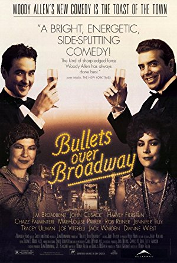
August 12, 2007Directed by Woody Allen; Starring John Cusack, Dianne Wiest, Jennifer Tilly, Chazz Palminteri
Bullets Over Broadway
USA, 1994, 98 min, Color, R
Woody Allen directs John Cusack as ambitious 1920s playwright David Shayne in this Prohibition-era comedy. Right off the bat, as David's agent arranges for financing, he knows he's in trouble. His benefactor is a local gangster, who freely provides funds... with one hitch. His ditsy girlfriend Olive (Jennifer Tilly) has to have a prominent role. Over his own protests, David casts her as a psychiatrist, a word she can hardly pronounce. Eventually, David must decide whether art or life is more important.